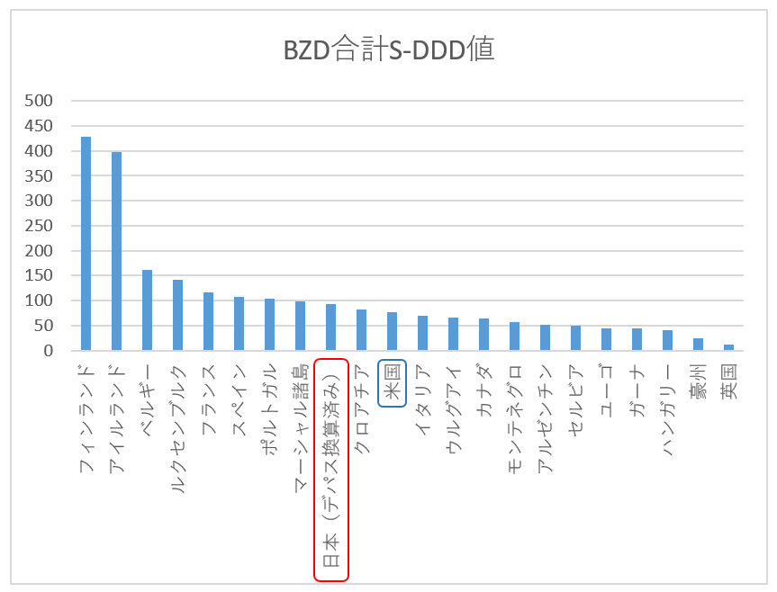

このサイトは、なにも知らずに飲み続けている日本人730万人のベンゾジアゼピン系おクスリ服用者の方のために、わたしの実体験にもとづいて作りました。
世界中で処方されているほとんどの睡眠薬・抗不安薬・筋弛緩薬が、ベンゾジアゼピンというおクスリです。
ベンゾジアゼピン系薬剤は、英国、豪州、デンマークで処方が規制され、その他先進国でも麻薬と同じ分類とされています。
ベンゾジアゼピン薬剤が重篤な身体依存性をもち、処方期間は2～4週間を超えてはならない、といったガイドラインがどの国にもあり、薬剤によってはラベルに注意書きもあります。例えばAtivan(ロラゼパム)などです。
日本ではようやく2017年に厚労省による注意喚起、2018年には3剤規制がかかり、半世紀にわたって
「一生服用しても問題のない薬」という常識で処方されてきましが、ついにその常識は崩れつつあります。ちなに米国でも「You could take the medicine indefinitely」
(無期限に服用できます)などと言われてきました。
そして海外の情報に調査を入れた結果、安易な処方は日本だけでなくほぼ世界中で蔓延しております。
最も先進的な規制のある英国、豪州ですら、です。規制に罰則や物理上長期処方不可能にするシステムがないせいかもしれません。
したがって日本以外のアジア各国では認識さえされていません。
香港はベンゾの危険性を知るドクターはまったくいない(0 doctor)と現地の被害者から情報が入っています。
さらに最新のINCBレポートを見ると、ここ数年でインドでの数値が激増しています。
未開拓市場としてターゲットにされているのだと思われます。S-DDD値（後述）はまだ一桁ですが総人口がアレですから総服用者数は日本を超えたかもしれません。
日本の対応の遅さを嘆く訴えが多いですが、残念ながらベンゾの問題は日本が突出してひどいわけでなく世界中の問題となっています。
本サイトではおそらく2千万人～3千万人のベンゾ服用者がいる最大消費国の米国の状況を中心に正しい情報をお伝えします。
ベンゾジアゼピン系薬剤はふたつに分類されます。ひとつは睡眠薬(sedative-hypnotics)、そして抗不安薬(anxiolytics)。
それらを世界的に集計しているのがINCB(国際麻薬統制委員会)。最新の2016年のデータをご紹介します。
左が睡眠薬(sedative-hypnotics)、右が抗不安薬(anxiolytics)
(S-DDD値： 人口1000人中1日あたり何錠消費されているか。 日本は1日に52錠／千人あたり 睡眠薬が使用されている。）
抗不安薬については日本で最も処方されている国産ベンゾ「デパス」は上記INCBデータには勘定されていません。したがって抗不安薬の日本のS-DDD値は19と低いものになっていますが、デパス・エチゾラム分の21を足すと40となります。
(厚労省第二回NBDオープンデータより2mg＝1錠にて積算)。そして両者を合計したベンゾジアゼピン薬全体のS-DDD値のグラフです。

両剤あわせたベンゾ全てで日本のS-DDD値は世界9位の消費率です。
千人中92剤の消費。日本では多剤処方が多く服用者はひとり平均1.9錠服用しているので19人中ひとりの計算となりますが、
国産ベンゾ「デパス」は0.25mg錠、0.5mg錠、1mg錠がありそれを考慮すると実際にはおそらく12～13人程度にひとりが服用していると思われます。2015年はS-DDD値が100、世界ワースト4位ですから
若干改善していますが、むしろ世界各国がますますひどい処方量になっていると理解した方が良さそうです。
米国の場合を見てみますと、S-DDD値は千人中65剤程度(2015年は55)。米国は基本単剤処方なので服用者はざっと14人にひとり程度と思われます。 人口3.3憶人なので絶対量では世界最大の2200万錠以上／1日( ≒ 服用者数2200万人）になります。
欧州においてはベンゾ発祥の地であるせいか（1955年スイスのロッシュ社が最初のベンゾジアゼピン薬開発に成功） 抗不安薬の消費率がものすごく、また順位もしょっちゅう変わります。上記の表を見るとフィンランド、アイルランドはものすごいことになっています。二人ににひとりが服用しているのでしょうか。 ウィキペディアを覗くとどちらも厳正な規制があるような記述がありますが、実際はまったく強制力のない勧告で、それもまるで活かされていないということです。
最後にアジアです。INCBのデータに入ってこない台湾・香港では５～６人にひとりが服用しているのではないかとも言われています。特に台湾はアジア最悪と国内では絶望視されているようで、
情報もほとんどなく（アシュトンマニュアル中文版などありません）ごくわずかな外国語ができる被害者が本サイトをはじめ日本語、英語サイトを頼りにしているようです。
その台湾ですが、Twitterのフォロワーさんの情報により具体的な数字がわかりました。
人口2300万人中、睡眠薬服用者は426万人とのことです。10人に1人が不眠症で悩んでおり5人に1人が睡眠薬を服薬しているとのこと。台湾国立薬剤師連盟によるデータのようです。
アジアワースト１であり、仮にINCBが台湾のデータを取り上げたらベルギーを抜いて世界ワースト3位に入ってくるでしょう。参考記事：國人年吞9億顆安眠藥
【なぜ最大薬害なのか】
ー被害者数比較ー
薬害エイズ：1800人
薬害肝炎：推定10,000人以上
子宮頸がんワクチン：1,739人以上
ベンゾジアゼピン：推定3,650,000人(長期服用者730万人のうち半数が依存形成と計算）
※しかも半世紀前から"一生飲んでも問題のない薬"として連綿と処方され続け、 その間に犠牲となった被害者は含みません。 また、最初はわたくし管理人も”日本最大”の意味で使用していましたが世界各国を調査の末、 これは文字通り人類史上最大と認識するようになりました。なんともアジテート気味で頭の悪そうな気が引ける表現ですが…事実なので仕方ありません。
さて、ベンゾジアゼピンは発作時だけなど頓服として、またはほんの数日間の一時的な使用であれば、即効性もあり非常に良いおクスリです。
手術前や救急などに使用されることはよくあります。 しかし、長期連用すると少量であっても"処方用量内依存"といってやめるのが非常に難しくなります
（精神依存ではなく身体依存です。英語ではdependencyといい薬物中毒やアルコール依存のaddictionやabuseとは異質なものです）。精神的な渇望はまったくなく（例外あり）やめたくとも強烈な数々の離脱症状が襲いやめられないのです。
仮に一気断薬もしくは短期間の減薬をすると 「生き地獄」「拷問」 といってもいい離脱症状に何年も苦しむことになります。
どのくらいの辛さかと言いますと例えばこのくらいです。これは依存症などといったものではなくあきらかに「薬剤性神経システム障害」（Injury)です。こちらの自死被害者の訴えをご覧ください。
それゆえベンゾからの離脱は覚せい剤、ヘロインといった麻薬よりもはるかに難しいのです。
服薬量を少しづつ減らしながら壊された神経システムの回復を年単位で待つより他に方法はありません。
治療法はありません。
ただ不思議なことにすべての長期連用者がなるのではなく、“約半数”の服用者のみが依存形成されます。
その他半数の方々はまったく離脱症状がなく簡単にやめることができます。（それが医療現場でもほとんどのドクターが気づけなかった理由のひとつです）。
なぜ半数の人たちは簡単にやめられるのか、薬理的な原因は解明されていません。
しかし統計学的には諸説ありますがほぼ証明されています。
1か月の連用で約半数が身体依存形成される、という説が有力です。
参考論文："Treatment of Benzodiazepine Dependence" by Michel Soyaka Ph.d
ちなみに、ベンゾジアゼピン薬の処方の65％は「精神科以外」で処方されています。 例：
器質的な異常が見つからないと、どの医師も「安定剤（抗不安薬）を出しておこう」というわけですね。 とりあえずビール（ベンゾ）、くらい気軽に処方します。 海外では「キャンディーのように処方された」という表現をよく使います。 実際、最初のうちはよく効くので患者も喜びます。リスクを説明されていなければ飲み続けます。ドクターも患者が満足してくれしかも処方箋を書くだけの作業なのでラクなわけです。 したがってこれを読んでいるあなたもベンゾジアゼピン長期連用者かもしれません。 日本では34種のベンゾジアゼピン系薬剤が処方可能で、ジェネリック名も入れたら何を服薬しているかは調べないとわかりません。 処方医も「これはベンゾという長期服用すると危険なクスリです」とインフォームドコンセントしてくれるケースは ほぼありません。逆に「弱いお薬ですから」と言いながら簡単にデパスなどを処方してきます。 もし自分に常備薬があったらぜひベンゾジアゼピン系薬剤一覧ページ をクリックしてチェックしてください！ そしてビンゴだったとしてもすぐにやめないように！
自分は飲んでなかったですか？ それはよかった！ それでも家族は？親戚は？ 会社の同僚、部下、上司は？ ベンゾの中には米国ではもちこむと逮捕・収監されてしまうものがあります。（フルニトラゼパム、サイレース、ロヒプノール）。仮にあなたが経営者や人事なら、部下に出張・赴任を命じる前に要チェックです！
日本でもついに厚労省が、2017年3月21日、ベンゾジアゼピンの常用量依存について認め、全国の医療機関、調剤薬局に注意喚起を行いました。
また、2018年4月からはベンゾ系薬剤の３剤規制が始まりました。「ベンゾジアゼピン系薬剤は依存性がある」
イギリスに遅れること数十年、ようやく日本でもこの認識が浸透しつつあります。
「気軽に処方していい薬ではないらしい」 と。
ですが離脱症状の厳しさ、そして安全な減薬方法については、
まだ医療界では共有されていません。 そして、ベンゾ系薬の危険性について
メディアではまったく取り上げられません。
この状況は世界中で同様です。製薬会社（だけではないかもしれませんが）の圧力であると考えられます。
なにしろ日米欧だけの総人口12億人中、服薬者約1億人。さらにオセアニアや南米、インド、中東にもたくさんの被害者が。
東南アジアではオーバーザカウンターといって処方箋なしにドラッグストアで手に入るので被害状況は不明。
第二次世界大戦の犠牲者数は世界で約8千万人程度と聞いています。
このことが広く知れ渡ったら未曾有の規模の混乱になるでしょう。報道規制を敷くのも当たり前かもしれません。
集団訴訟について
英国ではベンゾ被害が明らかになった1980年に、14,000人の患者および1,800の法律事務所による史上最大の集団訴訟を引き起こしました。その訴訟事項は、製薬メーカーは依存の可能性を知っていたが医師に対して意図的にこの情報を差し控えたというものです。（残念ながら資金不足で訴訟そのものはとん挫しています）。このクラスアクションをきっかけに「医師は患者に対してベンゾジアゼピン依存性と離脱症候群リスクについて適切な警告を行い、患者はリスク説明を受けたという同意書に署名」しなければならないという規制ができました。
減薬方法について
ということで当面は自分の身は自分で守るしかありません。主治医のいうとおりのペースでやめていくと、例えば元々の症状であった不眠・不安以外にも摩訶不思議な症状がたくさんでてくるので、ベンゾ減薬による離脱症状と自分でわかります。 主治医が「もともとの症状だ」と言うかもしれませんが、精神的な病とは別次元の症状、まさに神経障害によるものですので重症であればすぐわかります。軽傷～中傷ですと、「線維筋痛症」や「慢性疲労症候群」「身体表現性障害」などに誤診される可能性が高いです。慢性疾患と似ているベンゾジアゼピン医原症状をご参照ください。
自分は大丈夫だろう、と甘くみないように。ベンゾの場合は数ヶ月での断薬は一気断薬と同じと思ってください。短期で減断薬してしまいますと、断薬してからどんどん症状が激しくなっていき、半年～1年後に耐えられなくなって再服用してもまったく効果がありません。例外なケースに合わせて減薬してしまうと、死んだほうがマシな恐ろしい症状に見舞われる可能性があり、さらに後遺症が残ってしまうこともあります（もう一度言いますが、ベンゾの離脱症状は麻薬の禁断症状よりはるかに厳しいのです）
後戻りはできません
逆に、慎重に年単位で減薬していけば、毎日の減薬作業がちょっとめんどくさいだけで極小の症状で済み、働きながらでも少なくしていけるかもしれません。 まずはアシュトンマニュアル読んでください。20世紀に作成されたので情報としては古いですがあなたの基礎知識を固める必須教科書だと思ってください。アシュトンマニュアル日本語版はネットでダウンロードできます。 → こちら
ただアシュトンマニュアルをすでに読んだ方はわかると思いますが、アシュトンマニュアルの参考減薬ペースでもまだ速すぎるのです。また、アシュトンにも細かい間違いはいくつかあります。 アシュトンマニュアルを読んだら次にベンゾジアゼピンテーパリング戦略とソリューションを読んでください。基礎固めはこれで十分です。あとはあなたにしかわからない、あなた独自のカスタマイズが必要です。このサイトやツイッターで粒度の小さな情報は発信していくので勉強してください。あなたの主治医はあなた自身です。